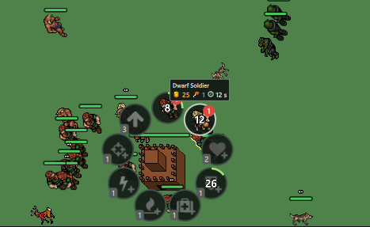

Tutorial 9: Economy, Bases and the Radial Menu
Income
Income is a scheduler event that repeats itself:
void game_t::schedule_income( std::uint64_t base_id_p, resource_state_t player_state_t::* resource_p, game_scheduler_t::time_point_t time_p ) { scheduler_.schedule( time_p, [this, base_id_p, resource_p, match_id = match_id_]( game_scheduler_t::time_point_t scheduled_time_p ) { if (match_id != match_id_ || !match_active_) { return; } auto* controller = controller_for_base(base_id_p); if (controller == nullptr || find_base(base_id_p) == nullptr) { return; } auto& resource = controller->state_.*resource_p; resource.amount_ += resource.income_;
Old events check the match id and stop after a new match starts, so we do not have to cancel them by hand.
The HUD shows a bar that fills until the next income. The core only sends a counter, QML animates the bar.
What a base can do
Units, research and upgrades come from data. A unit in data/base_types.json:
{
"creature": "orc_spearman", "tier": 2, "gold": 25, "food": 1, "timeMs": 12000,
"training": { "gold": 30, "timeMs": 30000 }
}
Tier 2 units need base level 2 and a training research first. A research path in data/tech_tree.json:
"id": "base_regeneration",
"name": "Base Regeneration",
"effect": "baseRegeneration",
"levels": [
{ "baseLevel": 1, "gold": 15, "timeMs": 15000, "value": 1 },
{ "baseLevel": 2, "gold": 80, "timeMs": 40000, "value": 3 },
{ "baseLevel": 3, "gold": 200, "timeMs": 60000, "value": 6 },
{ "baseLevel": 4, "gold": 350, "timeMs": 75000, "value": 10 }
]
Orders
Each action has its own queue in base_orders_t, so a base can research and produce at the same time. An order ends with a scheduler event:
void base_orders_t::complete( const std::string& key_p, game_scheduler_t::time_point_t time_p ) { auto& queue = queues_[key_p]; queue.event_.reset(); if (!completion_(key_p)) { schedule_completion(key_p, time_p + retry_interval); return; } --queue.queued_; if (queue.queued_ > 0) { schedule_completion(key_p, time_p + queue.duration_); } change_();
If there is no free tile for a new unit, the order retries one second later.
The radial menu
Felgo has no radial menu, so we build one from a Repeater. Each circle goes on a ring around the base:
readonly property real angle: (-90 + index * 360 / Math.max(1, circleRepeater.count)) * Math.PI / 180 x: radialMenu.width / 2 + radialMenu.radius * Math.cos(angle) - width / 2 y: radialMenu.height / 2 + radialMenu.radius * Math.sin(angle) - height / 2
The progress ring is a Qt Quick Shape:
PathAngleArc { centerX: actionCircle.width / 2 centerY: actionCircle.height / 2 radiusX: actionCircle.width / 2 - 2 * actionCircle.sizeScale radiusY: actionCircle.height / 2 - 2 * actionCircle.sizeScale startAngle: -90 sweepAngle: 360 * actionCircle.progress }
Research icons use Felgo AppIcon. Actions you cannot use yet turn grey with MultiEffect:
MultiEffect {
source: circleContent
saturation: actionCircle.clickable ? 0 : -1
}
Why not AppToolTip for the cost? Felgo's AppToolTip is a tutorial overlay that dims the screen. A small Rectangle works better for hover tips.

The radial menu with a unit queue and running research.